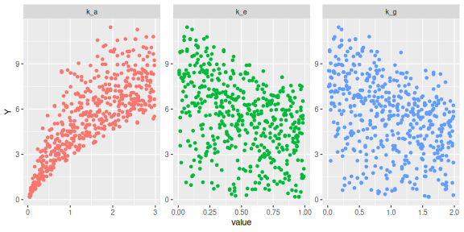
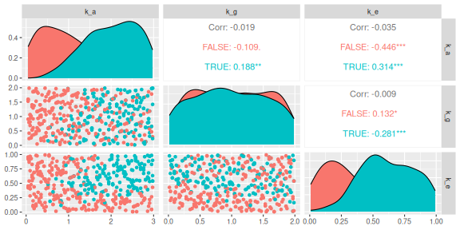

Simulating alcohol intoxication with a pharmacokinetic model
library(tidyverse)
library(deSolve)
# model parameters
parameters = c(
k_a = 2.0, # per hour, absorption rate from GI tract into blood
k_g = 0.05, # per hour, GI tract own elimination rate
k_e = 0.5, # per hour, elimination rate from blood by liver
duration = 0.5, # hours of dosing
input = 28 # grams of alcohol per hour of dosing
)
# initial state
state = c(dose = 0, gi = 0, blood = 0)
# model differential equations for use with deSolve
model = function(t, state, parameters) {
with(as.list(c(state, parameters)),{
dose = ifelse(t <= duration, input, 0) # dosing
dgi = -k_a * gi - k_g * gi + dose # GI tract
dblood = k_a * gi - k_e * blood # blood
return(list(c(dose, dgi, dblood))) # derivatives
})
}
# simulate model, immediately convert output to long data frame
times = seq(0, 10, by = 0.01)
out = ode(y = state, times = times, func = model, parms = parameters) %>%
as.data.frame %>%
pivot_longer(-time, names_to='compartment', values_to='concentration')
ggplot(out) + geom_line(aes(x=time, y=concentration, colour=compartment))
Parameter interpretation: MORE HERE
Output interpretation: MORE HERE
Sensitivity analysis
interested only in maximum blood alcohol
sim = function(parms) {
# parms is a 3-vector of 3 rate parameters
the_parameters = parameters
the_parameters['k_a'] = parms[1]
the_parameters['k_g'] = parms[2]
the_parameters['k_e'] = parms[3]
# the function simulates the 2 compartment model and returns the maximum
# concentration obtained in the 2nd compartment
out = ode(y = state, times = times, func = model, parms = the_parameters)
return(max(out[,'blood']))
}
sim_mat = function(parms) {
# parms is a n * 3 matrix of parameter settings
# the function returns an n-vector of model outputs
apply(parms, 1, sim)
}
library(sensobol)
library(sensitivity)
## Registered S3 method overwritten by 'sensitivity':
## method from
## print.src dplyr
##
## Attaching package: 'sensitivity'
## The following object is masked from 'package:dplyr':
##
## src
## The following object is masked from 'package:tidyr':
##
## extract
N = 100
params = c('k_a', 'k_g', 'k_e')
mat = sobol_matrices(N = N, params = params)
#rescale to assumed parameter ranges
# mat[,'k_a'] = 0.5 + (2 - 0.5) * mat[,'k_a'] # U(0.5, 2)
# mat[,'k_g'] = 0.0 + (0.2 - 0) * mat[,'k_g'] # U(0, 0.2)
# mat[,'k_e'] = 0.05 + (0.3 - 0.05) * mat[,'k_e'] # U(0.05, 0.3)
Y = sim_mat(mat)
sensobol_ind = sobol_indices(Y = Y, N = N, params = params, order='first',
boot=TRUE, R=5000)
# print the relevant results
sensobol_ind$results %>%
filter(sensitivity == 'Ti') %>%
select(-bias, -sensitivity) %>%
print(digits=3)
## original std.error low.ci high.ci parameters
## 1: 0.616 0.0948 0.4236 0.795 k_a
## 2: 0.129 0.0219 0.0853 0.171 k_g
## 3: 0.281 0.0476 0.1850 0.372 k_e
cbind(mat, Y) %>%
as_tibble %>%
pivot_longer(-Y, names_to='parameter', values_to='value') %>%
ggplot() + geom_point(aes(x=value, y=Y, colour=parameter), show.legend=FALSE) + facet_wrap(~parameter, scales='free')

Sensitivity analysis: We calculate Sobol Total Effect indices to quantify the sensitivity of the model output to the inputs. The \(i\)-th Total Effect index \(S_{T_i}\) quantifies what fraction of the variance in the output would be left if all inputs except the \(i\)-th one were fixed.
Specifically, we have \[S_{T_i} = \frac{E[Var(Y|X_1,\dots,X_{i-1},X_{i+1},\dots,X_d)] - Var(Y)}{Var(Y)}.\]
The \(S_{T_i}\)'s for \(k_a\) and \(k_e\) are around 0.4-0.5, showing that the absorption rate of alcohol from GI tract to blood, and removal rate from the blood are approximately equally important. The \(S_{T_i}\) of \(k_g\), the removal rate of alcohol from the GI tract is less important. So to reduce uncertainty in the model output, we should focus our efforts on pinning down the values of \(k_a\) and \(k_e\).
History Matching
History matching on (vague) empirical data: MORE HERE
The same amount of alcohol can have different effects on different people. The subjective feeling of intoxication due to a certain amount of alcohol depends mostly on the person's weight, and to some extent on their sex.
Blood alcohol concentration (BAC) is calculated by taking the amount of alcohol in the blood (measured in grams, as in our simulation), and dividing this by the volume of distribution, which is basically the body's water content, calculated as \(0.6 * body\ weight\) for males and \(0.55 * body\ weight\) for females. So a 75kg male with 10g of alcohol in their blood has a BAC of \(0.01 / (75 * 0.6) = 0.00022\) that is, 0.22 permille.
A slight mood elevation, slightly relaxed feeling and mild impairment of coordination (feeling tipsy) is usually reported at between 0.1 and 0.3 permille BAC. At 0.4 to 0.6 permille lowered inhibition and impaired memory set in, 0.7 to 0.9 people get euphoria and slurred speech, and after about 1 permille (45g alcohol in blood for our 75kg guy) the chance of marriage proposals and pirate chants increases drastically.
So if you know that drinking one beer within half an hour makes you slightly tipsy at most, but never drunk, you know that you are at between 0.1 and 0.3 permille BAC which, depending on your weight and sex, translates into a certain maximum alcohol amount in your blood. For the 75kg dude this would be between 4.5 and 13.5 grams.
About 30% of our parameters produce maximum alcohol amounts in this range. In other words, we can rule our 70% of parameters. Let's see how the Not-Ruled-Out-Yet (NROY) region looks like:
cbind(mat, Y) %>% as_tibble %>%
pivot_longer(-Y, names_to='parameter', values_to='value') %>%
ggplot() + geom_point(aes(x=value, y=Y, colour=(Y>4.5 & Y < 13.5))) + facet_wrap(~parameter, scales='free')
cbind(mat, Y) %>% as_tibble %>%
filter(Y>4.5 & Y < 13.5) %>%
select(-Y) %>%
as.matrix() %>%
pairs()
sim2 = function(parms) {
# parms is a 3-vector of 3 rate parameters
the_parameters = parameters
the_parameters['k_a'] = parms[1]
the_parameters['k_g'] = parms[2]
the_parameters['k_e'] = parms[3]
# the function simulates the 2 compartment model and returns the maximum
# concentration obtained in the 2nd compartment
out = ode(y = state, times = times, func = model, parms = the_parameters)
if (all(out[,'blood'] < 4.5)) {
return(0)
} else {
return(tail(times[ out[,'blood'] > 4.5 ], 1))
}
}
sim2_mat = function(parms) {
# parms is a n * 3 matrix of parameter settings
# the function returns an n-vector of model outputs
apply(parms, 1, sim2)
}
Y2 = sim2_mat(mat)
sobol_indices(Y = Y2, N = N, params = params, order='first',
boot=TRUE, R=5000)$results %>%
filter(sensitivity == 'Ti') %>%
select(-bias, -sensitivity) %>%
print(digits=3)
## original std.error low.ci high.ci parameters
## 1: 0.357 0.1080 0.140 0.563 k_a
## 2: 0.172 0.0511 0.068 0.268 k_g
## 3: 0.842 0.1292 0.582 1.088 k_e
cbind(mat, Y, Y2) %>% as_tibble %>%
filter(Y>4.5 & Y < 13.5 & Y2>0.5 & Y2 < 3) %>%
select(-Y, -Y2) %>%
as.matrix() %>%
pairs()
